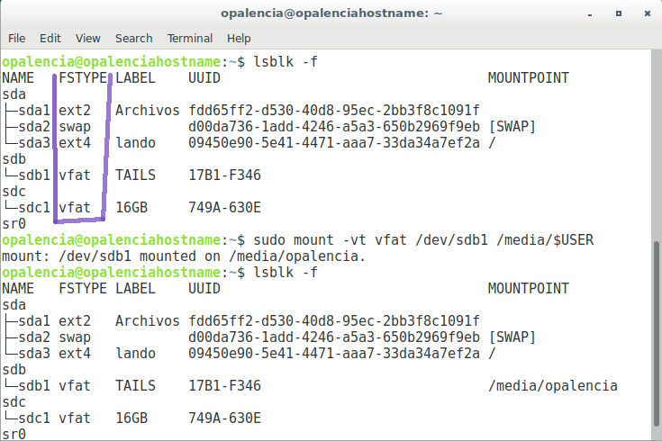

Montar una unidad de almacenamiento > mount¶
Nombre del comando: mount
Man page online: https://linux.die.net/man/8/mount
Descripción: Este comando sirve para montar una unidad de almacenamiento en algún punto de la raíz “/” de la distro con el fin de visualizar o modificar su contenido; la carpeta “/mnt” está diseñada para tal propósito. Por lo general cualquier unidad de almacenamiento que se inserte en un puerto USB se adjunta de forma automática a algún punto dentro de la raíz, comúnmente en “/media/$USER”, sin embargo, no siempre sucede así y habrá que montar dicha unidad de forma manual. Este comando requiere que se anteponga el sudo. “$USER” es una variable de sistema que sirve para indicar el nombre del usuario activo.
Nota
Cuando no se especifica el formato (ext4, ntfs, vfat, etc) que tiene la unidad de almacenamiento a montar entonces da un error que dice “mount point does not exist”, este error sólo ocurre cuando se monta la unidad en un punto del usuario actual “/media/$USER”, no así cuando se adjunta en “/mnt”; por tal motivo es recomendable colocar el formato de la unidad de almacenamiento a la hora de montarla. Toda distro que utilice el kernel de linux tendría el mismo comportamiento, pero eso no es garantía; asi que, si se presentan problemas para montar una unidad de almacenamiento leer la documentación oficial de tu distro. No se puede montar varias unidades en el mismo punto de montaje, por ejemplo, si tengo dos USB’s y las quiero montar en “/mnt”, se reconocerá únicamente la última que he montado; por lo tanto hay que elejir puntos distintos para cada unidad.
Man page local: $ man mount o $ man mount > mount.txt
Instalado por defecto: Sí, al menos en Debian.
Algunas Opciones:
-r, --read-only Monte o adjunte la unidad de almacenamiento en modo sólo de lectura, es decir, no podrá realizar modificaciones a su contenido; esto está sujeto al tipo de formato que tenga la unidad de almacenamiento y varía en base a eso.
-h, --help Muestra toda la información disponible de los parámetros en forma resumida.
-t, --types En este parámetro se debe ingresar el tipo de sistema de archivos que tiene asignada la unidad de almacenamiento a montar, el comando “lsblk -f” en la columna “FSTYPE” indica a qué formato pertenece la unidad de almacenamiento que se ha insertado en algún puerto USB.
Ejemplo 1: $ sudo mount -vt vfat /dev/sdb1 /media/$USER, adjunte la unidad de almacenamiento “sdb1” con formato “vfat” al punto de montaje del usuario actual que ha iniciado sesión que se encuentra en “/media/nombreusuario” y que me indique si el comando se ejecuta con éxito.
Ejemplo 2: $ sudo mount -vt vfat /dev/sdb1 /mnt, adjunte la USB llamada “sdb1” en el punto de montaje “/mnt”. Cuando se monta o adjunta una unidad de almacenamiento en este lugar hay que ir explícitamente hasta esta carpeta para visualizar dicho punto de montaje.
Ejemplo 3: $ sudo mount -vrt vfat /dev/sdb1 /media/$USER, adjunte la unidad de almacenamiento “sdb1” con formato “vfat” al punto de montaje del usuario actual que ha iniciado sesión que se encuentra en “/media/nombreusuario”, que me indique si el comando se ejecuta con éxito y además que sólo sea de lectura, es decir, no se podrá agregar o quitar contenido a dicha unidad.